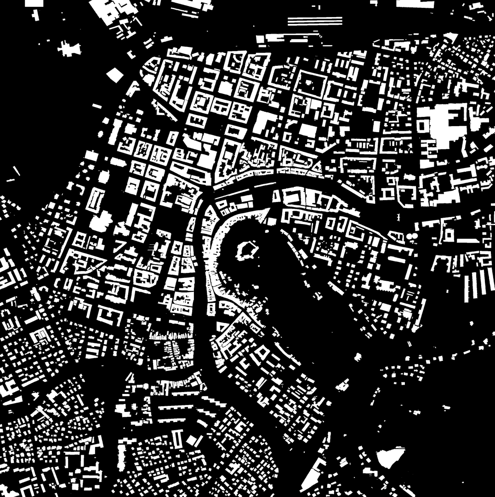
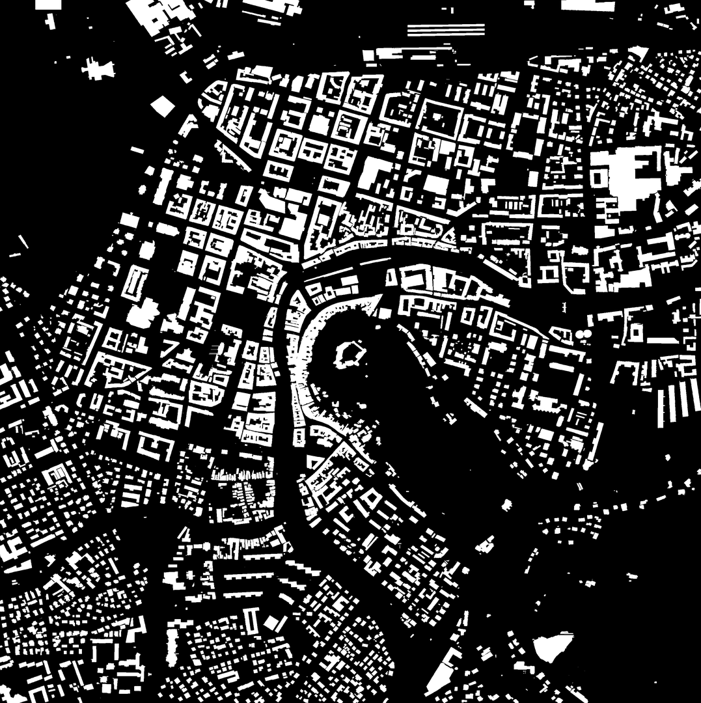

Roof Segmentation for Solar Energy Potential Estimation using CNNs with a U-net Architecture
This project focuses on using deep learning for rooftop segmentation from satellite images to estimate the potential for solar panel installations. It employs Convolutional Neural Networks (CNNs) to automatically detect rooftops suitable for photovoltaic (PV) panel placement, optimizing the transition to renewable energy.
Data Collection
- High-resolution satellite images were gathered for Ljubljana and Milan using the Mapbox API
- Building geometries were extracted using OpenStreetMap and manually refined.
Mask Generation & Data Augmentation
- A sliding window approach was used to create 200×200-pixel patches.
- Data augmentation techniques (flipping, rotating, scaling) were applied to improve model robustness.
Model Architecture
- A U-Net CNN was implemented for rooftop segmentation.
- Used Dice loss to handle class imbalance and IoU metric for evaluation.
Training & Evaluation
- The model was trained on Ljubljana data and validated/tested on Milan data.
- Training accuracy: ~95%, IoU*: ~85%
- Validation accuracy: <80%, IoU*: ~50% (indicating generalization issues)
Challenges
- The model performed well on flat roofs but struggled with sloped roofs.
Future Work
- Improve segmentation of sloped rooftops by incorporating 3D geometry data.
- Expand dataset with images from more diverse locations.
- Optimize training pipeline using cloud-based GPU processing.
 
